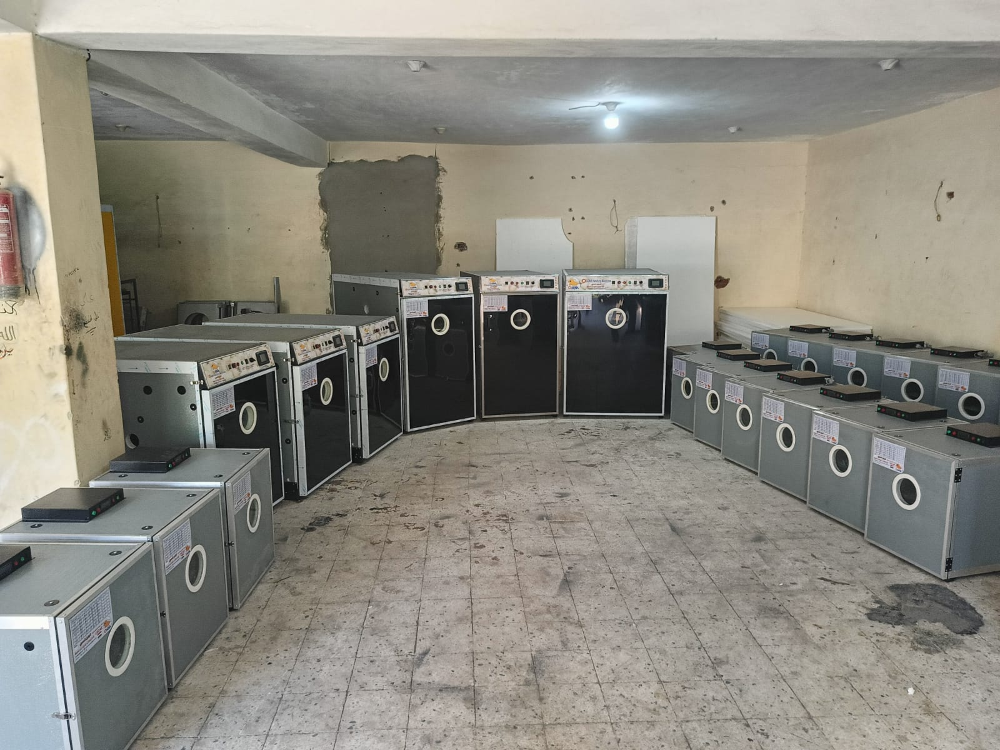

Oscar Poultry Supplies
ماكينات التفريخ وتجهيزات ومستلزمات مزارع الدواجن في مكان واحد
أوسكار لمستلزمات الدواجن شركة متخصصة في ماكينات التفريخ وتجهيزات المزارع ومستلزمات التشغيل، مع تركيز واضح على حلول التفريخ باعتبارها أقوى خطوطنا. نخدم المزارع والموزعين والمشروعات الجديدة من خلال الشحن داخل مصر، والمساعدة في التركيب، وخدمة ما بعد البيع، وتجهيز الحل المناسب حسب طبيعة كل مشروع.
- شحن إلى مختلف المحافظات داخل مصر مع ترتيب التوريد حسب طبيعة الطلب
- مساعدة في التركيب والتجهيز وخدمة ما بعد البيع للخطوط الأساسية
- حلول مناسبة للمزارع والموزعين والمشروعات الجديدة بدون تعقيد
قوة حقيقية على أرض الواقع
نقود الحوار مع العميل من التفريخ، ثم نكمل تجهيز المزرعة حسب احتياجه
الصفحة الرئيسية مصممة لتوضح بسرعة ما نبيعه، وما إذا كان لدينا الحل المناسب، وكيف ينتقل العميل إلى طلب عرض سعر أو التواصل المباشر. لذلك يظهر التفريخ في الصدارة، ثم باقي الأنظمة المساندة للمزرعة ضمن صورة تجارية واضحة ومقنعة.


شحن وتركيب وخدمة ما بعد البيع
من اختيار المعدة وحتى الاستلام والتشغيل، مع دعم واضح للمزارع والموزعين.
Why Oscar?
لماذا يختار العملاء Oscar Poultry Supplies؟
نجمع بين التخصص في التفريخ والقدرة على تجهيز حلول مزرعة كاملة، مع نشاط فعلي يعكس حجم الشركة وخبرتها في السوق.
مصنع ومعرض
وجود المصنع والمعرض يمنح العميل ثقة أكبر في المعاينة والعرض والتجهيز وخدمة ما بعد البيع.
تصنيع واستيراد وتوريد
نوفر مزيجًا عمليًا بين التصنيع والاستيراد والتوريد لتغطية احتياجات المزرعة والموزعين بمرونة أكبر.
خبرة قوية في التفريخ
ماكينات التفريخ هي الفئة الأهم لدينا، لذلك نعطيها أولوية واضحة في الحلول والعرض وخدمة ما بعد البيع.
شحن وتركيب
نرتب التوريد والشحن داخل مصر مع المساعدة في التركيب وتهيئة الخطوات الأولى للتشغيل.
خدمة للمزارع والموزعين
نخدم طلبات المزارع والمشروعات الجديدة وطلبات الموزعين بشكل واضح ومرتب وسريع في التواصل.
معارض وتصدير
لدينا نشاط واقعي في المعارض وتجهيز الشحنات وخبرة تدعم العمل داخل مصر وللأسواق الخارجية.

الفئة الرئيسية
التفريخ هو الفئة الرائدة في أوسكار
إذا كنت تبحث عن ماكينات تفريخ لمزرعة قائمة أو مشروع جديد، فهذا هو أفضل مكان تبدأ منه. نوفر موديلات وسعات متعددة، مع صور حقيقية من المعرض والتجهيزات الفعلية، حتى يفهم العميل سريعًا إمكانيات القسم ويطلب العرض المناسب بثقة أكبر.
- ماكينات تفريخ بسعات متعددة
- مناسبة للمزارع والمفاقس
- توريد وشحن داخل مصر
- متابعة بعد البيع
الأقسام الأساسية
ابدأ من التفريخ، ثم أكمل تجهيز مزرعتك حسب احتياجك
رتبنا الأقسام لتخدم رحلة الشراء بشكل أوضح: الفئة الرئيسية أولًا، ثم باقي الحلول التي تكمل تجهيز المزرعة وتشغيلها.
01 | التفريخ
ماكينات التفريخ
أقوى فئة لدينا، مناسبة للمزارع والمفاقس والمشروعات الجديدة التي تبحث عن بداية قوية أو توسع واضح في خط التفريخ.

02 | التغذية
أنظمة وخطوط التغذية
حلول مناسبة للمزارع التي تريد تشغيلًا أكثر تنظيمًا وتوزيعًا أفضل للعلف مع تجهيز حسب حجم المشروع.

03 | الشرب
أنظمة الشرب وخطوط المياه
خطوط نبل ومنظمات ومكونات توزيع مياه مناسبة للمزارع التي تحتاج تشغيلًا أكثر استقرارًا وسهولة في الإدارة.

04 | التهوية والتبريد
التهوية والتبريد
شفاطات وخلايا تبريد تساعد في تحسين بيئة التشغيل داخل المزارع، مع خيارات تناسب التوسعات والمشروعات الجديدة.

05 | التدفئة
أنظمة التدفئة
هيترات وحلول تدفئة للمزارع التي تحتاج بيئة أكثر ثباتًا في الفترات الباردة أو في بعض مراحل التشغيل.

06 | مستلزمات المزارع
مستلزمات المزارع والتشغيل اليومي
علافات ومساقي ومستلزمات تشغيل يومية تغطي الاحتياجات المتكررة للمزارع والمحلات والموزعين.
عن أوسكار
ملخص سريع عن الشركة وقدراتها الفعلية
أوسكار لمستلزمات الدواجن ليست مجرد جهة بيع منتجات، بل شركة تعمل من خلال مصنع ومعرض وتخدم السوق المصري وطلبات المزارع والموزعين، مع خبرة في التوريد والتجهيز والشحن والمتابعة بعد البيع. قوتنا الأبرز في ماكينات التفريخ، إلى جانب تجهيزات المزارع وخطوط التشغيل الأساسية، مع خبرة تدعم العمل داخل مصر وأسواق التصدير.
مصنع + معرض
شحن داخل مصر
تركيب ومتابعة
خبرة في التصدير
نخدم العملاء داخل مصر مع ترتيب التوريد حسب نوع المشروع
ندعم المزارع والموزعين وطلبات المشروعات الجديدة
نوفر الشحن والمساعدة في التركيب وخدمة ما بعد البيع
نقود العرض التجاري من التفريخ ثم نكمل باقي حلول المزرعة
دلائل الثقة
صور حقيقية من نشاط الشركة تدعم الثقة في الحجم والخبرة
وضعنا الصور هنا بشكل مقصود لتؤكد أن الشركة تعمل على أرض الواقع في العرض والتجهيز والشحن والمعارض، وليس فقط عبر عرض منتجات على الموقع.


تواصل سريع
هل تريد سعرًا مباشرًا أو مساعدة في اختيار القسم المناسب؟
إذا كنت صاحب مزرعة أو موزعًا أو تبدأ مشروعًا جديدًا، يمكننا مساعدتك في تحديد الفئة المناسبة ثم ترتيب العرض أو التوريد أو التجهيز الكامل بشكل أسرع.
لطلب عرض سعر مباشر: استخدم نموذج التواصل
للاستفسار السريع: راسلنا على واتساب
للتجهيز الكامل: اذكر نوع المشروع أو مساحة المزرعة
للموزعين: أرسل نوع الطلب أو الكمية المطلوبة